Shamal AL-Dohuki, PhD
Dr. Shamal AL-Dohuki
|
NEWS
- 08.2024 Chair of the Computer Science and IT Department at the American University of Kurdistan
- 09.2020 Head of the Computer Science Department at the University of Duhok
- 07.2020 Acted as a Short Papers Program Committee member at IEEE VIS2020
- 10.2019 Workshop on Urban Data Visualization @ ITSC 2019
- 09.2019 Joined the Computer Science Department, University of Duhok
- 07.2019 Acted as a Short Papers Program Committee member at IEEE VIS2019
- 05.2019 Received Ph.D. degree in Computer Science from Kent State University
- 01.2019 Successfully Defended my Ph.D. Dissertation (January 23, 2019)
- 01.2019 Received Kent State University Fellowship Award
- 10.2018 Tutorial on Urban Trajectory Data Visualization @ IEEE VISWEEK 2018
- 02.2018 Received Outstanding Doctoral Research Award, CS Department @ Kent State University
- 08.2017 Received Student Volunteer Award, IEEE VisWeek 2017
- 09.2016 Graduate Student Senate (GSS) Domestic Travel Award, Kent State University
- 08.2016 Received Student Volunteer Award, IEEE VisWeek 2016
Bio
-
My name is Shamal AL-Dohuki, and I am from the Kurdistan Region of Iraq. I am currently the Chair of the Department of Computer Science and IT at
the American University of Kurdistan in the Kurdistan Region. I have been working in the field of image processing for five years. My current research interests include the implementation of Visual Analytics for Large Urban Trajectory Data, Urban Data Management and Visualization, Visual Querying of Trajectory Data, Semantic Data Query and Analytics, Data Security, and AI. I have published several technical papers in prestigious venues, including the IEEE Transactions on Visualization and Computer Graphics, IEEE Transactions on Intelligent Transportation Systems, and IEEE Computer Graphics and Applications. Additionally, I have served as a reviewer for various journals and conferences in the domains of Information Visualization and Visual Analytics. I have collaborated with my Ph.D. advisor, Ye Zhao, on numerous research grants supported by the National Science Foundation (NSF). As part of our efforts, we have developed several open-source software tools for domain researchers to conduct visual analytics tasks, including Trajectory Analytics, NeighborVis, and GeoVisuals. I have received various awards for my work, including the University Fellowship, the Most Outstanding Scholarship at Kent State University, and the Outstanding Doctoral Research Award in the Department of Computer Science at Kent State University.
I earned my Ph.D. degree in Computer Science from Kent State University in 2019, having previously obtained my Bachelor’s and Master’s degrees in Computer Science from the University of Duhok in 2005 and 2008, respectively.
Publications
| 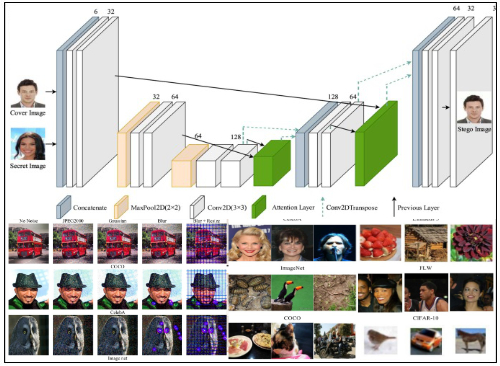 | AttenHideNet: A novel deep learning-based image steganography method using a lightweight U-net with soft attentionYounis M. Younis, Ramadhan J. Mstafa, Shamal AL-DohukiJournal of Applied Soft Computing, 2025. [Abstract][PDF] Image-to-image steganography, embedding secret information within images while preserving visual quality, has become essential due to growing demands for secure and efficient digital communication. Traditional methods often struggle to achieve high embedding capacity without sacrificing imperceptibility. Recent advancements in deep learning have offered promising solutions by enabling more complex data embedding strategies. In this paper, we propose AttenHideNet, a novel deep learning-based steganography method leveraging a lightweight U-Net architecture (less than 1.2 million parameters) combined with soft attention mechanisms. By utilizing the YUV color space instead of RGB, our method significantly improves embedding efficiency, capacity, and visual imperceptibility. AttenHideNet achieves an embedding capacity of up to 24 bits per pixel (bpp) while maintaining high visual quality. The soft attention mechanism dynamically identifies and prioritizes embedding in less perceptually sensitive image regions. Experimental results on benchmark datasets demonstrate that AttenHideNet achieves superior visual quality (PSNR up to 52.67 dB) compared to state-of-the-art methods, with low latency (18 ms/image) and minimal memory usage (4.11 MB), making it suitable for real-time applications. Despite these advantages, the method shows limited robustness under firm JPEG compression and geometric transformations, highlighting essential directions for future research. |
| 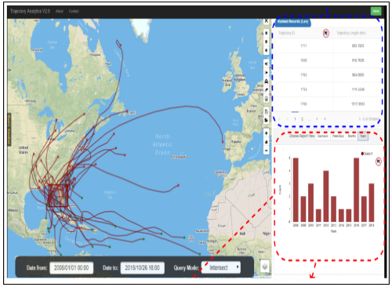 | SparseTrajAnalytics: an Interactive Visual Analytics System for Sparse Trajectory DataXinyue Ye, Jiaxin Du, Xi Gong, Ye Zhao, Shamal AL-Dohuki, Farah KamwJournal of Geovisualization and Spatial Analysis, 2021. [Abstract][PDF] Sparse trajectory data are trajectories that cover a relatively large geographic area with infrequent samplings of movements, such as human migration and hurricane trajectories. Compared with dense trajectory data (e.g., massive vehicle movements in a metropolitan area), sparse trajectories represent a more general form of movement data due to the data availability and less sensitivity. However, there is a lack of open source software for sparse trajectory data analytics. We designed an online system with a self-adaptive heatmap and multi-spatial-temporal-view charts to analyze sparse trajectories both visually and interactively. With our system, users can (1) store and manage sparse trajectory data on a cloud service; (2) analyze sparse movement behaviors by querying consolidated and live data sets using keywords, spatial location, and time constraints; and (3) explore query results and associated data through web-based thematic maps, tables, and charts. Results of the survey among domain experts show that the open source system is intuitive and user-friendly. |
| 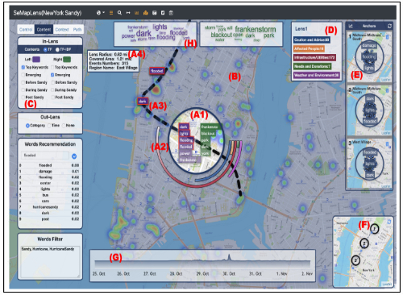 | GTMapLens: Interactive Lens for Geo-Text Data Browsing on MapChao Ma, Ye Zhao, Shamal AL-Dohuki, Jing Yang, Xinyue Ye, Farah Kamw, Md AmiruzzamanComputer Graphics Forum (EuroVis Conference 2020), 2020, Wiley. [Abstract][PDF] Data containing geospatial semantics, such as geotagged tweets, travel blogs, and crime reports, associates natural language texts with geographical locations. This paper presents a lens-based visual interaction technique, GTMapLens, to flexibly browse the geo-text data on a map. It allows users to perform dynamic focus+context exploration by using movable lenses to browse geographical regions, find locations of interest, and perform comparative and drill-down studies. Geo-text data is visualized in a way that users can easily perceive the underlying geospatial semantics along with lens moving. Based on a requirement analysis with a cohort of multidisciplinary domain experts, a set of lens interaction techniques are developed including keywords control, path management, context visualization, and snapshot anchors. They allow users to achieve a guided and controllable exploration of geo-text data. A hierarchical data model enables the interactive lens operations by accelerated data retrieval from a geo-text database. Evaluation with real-world datasets is presented to show the usability and effectiveness of GTMapLens. |
| 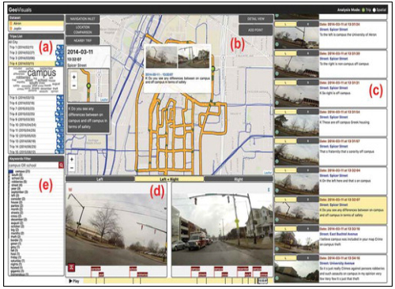 | GeoVisuals: a visual analytics approach to leverage the potential of spatial videos and associated geonarrativesSuphanut Jamonnak, Ye Zhao, Andrew Curtis, Shamal AL-Dohuki, Xinyue Ye, Farah Kamw, Jing YangInternational Journal of Geographical Information Science (IJGIS), 2020. [Abstract][Project][PDF] Videos embedded with spatial coordinates, especially when combined with additional expert insights, offer the potential to acquire fine-scale multi-time period contextualized data for a variety of different environments. However, while these geospatial multimedia (GSMM) data include abundant spatiotemporal, semantic and visual information, the means to fully leverage their potential using a suite of visual and interactive analysis techniques and tools has thus far been lacking. In this paper, we address this gap by first identifying the types of tasks required of GSMM data, and then presenting a solution platform. This GeoVisuals system utilizes a visual analysis approach built on semantic data points that can be integrated spatially, which in turn enables management in a unified database with combined spatio-temporal and text querying. A set of visualization functions are integrated in two investigation modes: geo-video analysis and geo-location analysis. |
| 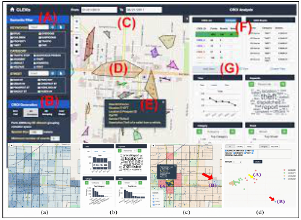 | CLEVis: A Semantic Driven Visual Analytics System for Community Level EventsChao Ma, Ye Zhao, Andrew Curtis, Farah Kamw, Shamal AL-Dohuki, Jing Yang, Suphanut Jamonnak, Ismael AliIEEE Computer Graphics and Applications, 2020. [Abstract][Project][PDF] Community-level event (CLE) datasets, such as police reports of crime events, contain abundant semantic information of event situations and descriptions in a geospatial-temporal context. They are critical for frontline users, such as police officers and social workers, to discover and examine insights about community neighborhoods. We propose CLEVis, a neighborhood visual analytics system for CLE datasets, to help frontline users explore events for insights at community regions of interest (CROIs), namely fine-grained geographical resolutions such as small neighborhoods around local restaurants, churches, and schools. CLEVis fully utilizes semantic information by integrating automatic algorithms and interactive visualizations. The design and development of CLEVis are conducted with solid collaborations with real world community workers and social scientists. Case studies and user feedback are presented with real world datasets and applications. |
| 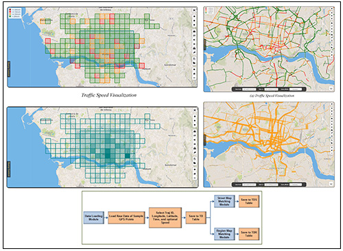 | An Open Source TrajAnalytics Software for Modeling, Transformation and Visualization of Urban Trajectory DataShamal AL-Dohuki, Farah Kamw, Ye Zhao, Xinyue Ye, Jing YangThe 22nd IEEE Intelligent Transportation Systems Conference, To Appear, Auckland, New Zealand, October, 2019. [Abstract][Project][PrePrint] We present an open source software, named as TrajAnalytics, which models, transforms, and then visualizes urban trajectory data for transportation and urban study. It allows researchers, administrations, and practitioners to understand the population mobility data and to discover knowledge intuitively. A conceptual data model is presented which integrates trajectory data with geo-structures through a variety of data access queries. The model guides us to develop data processing and management capability and support various visual queries through a Web-based visualization interface. A set of visualization widgets and interaction functions promote easy user engagement. A primary user study shows the usability of the software. |
| 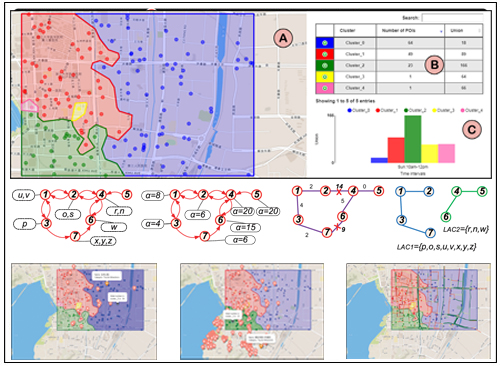 | Visually Analyzing Latent Accessibility Clusters of Urban POIsFarah Kamw, Shamal AL-Dohuki, Ye Zhao, Jing Yang, Xinyue Ye, Wei Chen10th EuroVis Workshop on Visual Analytics (EuroVA 2019), To Appear June, 2019. [Abstract][Project][PrePrint] Accessibility of urban POIs (Points of Interest) is a key topic in a variety of urban sciences and applications as it reflects inherent city design, transportation, and population flow features. Isochrone maps and other techniques have been used to identify and display reachable regions from given POIs. In addition, domain experts further want to study the distribution effects of accessibility in the urban space such as finding spatial regions that have different accessibility patterns. Such patterns can be manifested by clustering POIs based on their accessibility of different time periods under different traffic conditions. In this paper, we present a visualization system that helps users to find and visualize Latent Accessibility Clusters (LACs) of POIs. The LACs discover temporally changing urban sub-regions (including nearby POIs) with disparate accessibilities at different times. LACs are computed by a POIGraph which connects POIs into a graph structure by extending the dual road network of the corresponding city. The LAC computation is facilitated by graph traversal over the POIGraph. By visualizing the LAC regions on the map, users can visually study the hidden patterns of spatial accessibility. It can contribute to urban transportation, planning, business, and related social sciences. |
| 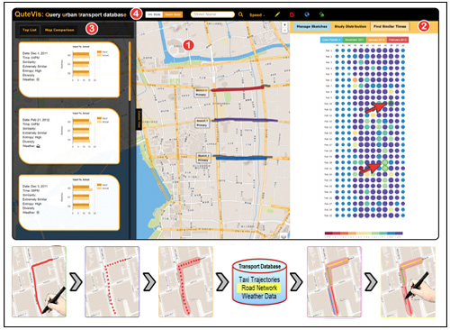 | QuteVis: Visually Studying Transportation Patterns Using Multi-Sketch Query of Joint Traffic SituationsShamal AL-Dohuki, Ye Zhao, Farah Kamw, Jing Yang, Xinyue Ye, Wei ChenIEEE Computer Graphics and Applications, To Appear, 2019. [Abstract][Project][PrePrint] QuteVis uses multi-sketch query and visualization to discover specific times and days in history with specified joint traffic patterns at different city locations. Users can use touch input devices to define, edit, and modify multiple sketches on a city map. A set of visualizations and interactions are provided to help users browse and compare retrieved traffic situations and discover potential influential factors. QuteVis is built upon a transport database that integrates heterogeneous data sources with an optimized spatial indexing and weighted similarity computation. An evaluation with real-world data and domain experts demonstrates that QuteVis is useful in urban transportation applications in modern cities. |
| 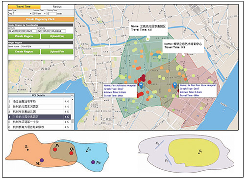 | Urban Structure Accessibility Modeling and Visualization for Joint Spatiotemporal ConstraintsFarah Kamw, Shamal AL-Dohuki, Ye Zhao, Thomas Eynon, David Sheets, Jing Yang, Xinyue Ye, Wei ChenIEEE Transactions on Intelligent Transportation Systems (t-its), 2019. [Abstract][Project][PDF] In modern cities, service providers want to identify regions hard to reach from multiple fire stations; a citizen wants to meet with friends in a restaurant close to each other; and administrators want to find whether an area far from two bus stations needs a new one. Such tasks involve studying the dynamic accessibility of urban structures over multiple geospatial and temporal constraints, which is an important topic in geographical sciences and urban transportation. In this paper, we present new computational model and a visualization system which help domain users to interactively study jointly-constrained accessible regions, street segments, and Points of Interest (POIs). In particular, USAVis system (Urban Structure Accessibility Visualization) is built upon a new Min-Max Joint Set (MinMaxJS) model, where specifically-designed set operations not only represent the accessible regions but also compute the minimum and maximum access times to urban structures from joint constraints. The computation and visualization are supported by a new graph model that accommodates the real-world dynamic traffic situation and the geographical settings of urban street segments and POIs. The visualization system allows users to conveniently construct and manage accessible regions, and visually explore urban structures inside them. |
| 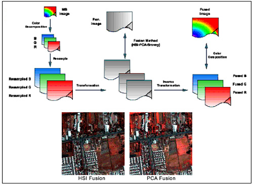 | Image Fusion for Resolution Improvement of Multispectral Satellite ImagesAhmed AK. Tahir, Shamal AL-DohukiThe XVII International Conference - Multidisciplinary, vol. 31/2017, ISSN 2067-7138, held in 2-3 June, 2017, Sebes, Romania. [Abstract][PDF] This paper presents a comparative study concerning the techniques of image fusion that aim at the improvement of the spatial resolution of multispectral satellite images for remote sensing applications. Three methods are used, Hue-Saturation-Intensity color transform (HSI), Principal Component Analysis (PCA), and Brovey technique. Two datasets of two satellites having different resolution and different resolution ratio are used, LANDSAT7 and IKONOS. The measurement of Trade-Off-Value, which is a measure of the degree of resolution improvement and spectral property preservation, is used to evaluate the given methods. The results have shown the superiority of the Brovey method for the LANDSAT7 dataset and the superiority of HSI for the IKONOS dataset. |
| 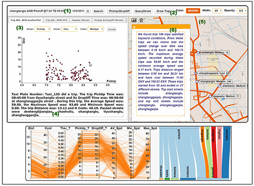 | SemanticTraj: A New Approach to Interacting with Massive Taxi TrajectoriesShamal AL-Dohuki, Farah Kamw, Ye Zhao, Chao Ma, Yingyu Wu, Jing Yang, Xinyue Ye, Fei Wang, Xin Li, and Wei ChenIEEE Transactions on Visualization and Computer Graphics (TVCG), 2017. [Abstract][Project][PDF] Massive taxi trajectory data is exploited for knowledge discovery in transportation and urban planning. Existing tools typically require users to select and brush geospatial regions on a map when retrieving and exploring taxi trajectories and passenger trips. To answer seemingly simple questions such as “What were the taxi trips starting from Main Street and ending at Wall Street in the morning?” or “Where are the taxis arriving at the Art Museum at noon typically coming from?”, tedious and time consuming interactions are usually needed since the numeric GPS points of trajectories are not directly linked to the keywords such as “Main Street”, “Wall Street”, and “Art Museum”. In this paper, we present SemanticTraj, a new method for managing and visualizing taxi trajectory data in an intuitive, semantic rich, and efficient means. With SemanticTraj, domain and public users can find answers to the aforementioned questions easily through direct queries based on the terms. They can also interactively explore the retrieved data in visualizations enhanced by semantic information of the trajectories and trips. In particular, taxi trajectories are converted into taxi documents through a textualization transformation process. This process maps GPS points into a series of street/POI names and pick-up/drop-off locations. It also converts vehicle speeds into user-defined descriptive terms. Then, a corpus of taxi documents is formed and indexed to enable flexible semantic queries over a text search engine. Semantic labels and meta-summaries of the results are integrated with a set of visualizations in a SemanticTraj prototype, which helps users study taxi trajectories quickly and easily. A set of usage scenarios are presented to show the usability of the system. We also collected feedback from domain experts and conducted a preliminary user study to evaluate the visual system. |
| 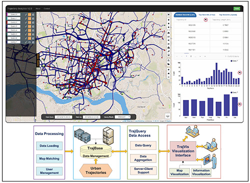 | TrajAnalytics: A Web-Based Visual Analytics Software of Urban Trajectory DataYe Zhao, Shamal AL-Dohuki, Thomas Eynon, Farah Kamw, David Sheets, Chao Ma, Yueqi Hu, Xinyue Ye, Jing YangIEEE Workshop on Visualization in Practice : Open Source Visualization and Visual Analytics Software, IEEE Visualization Conference 2016, Baltimore, Oct, 2016. [Abstract][Project][PDF][Poster] We present a web-based software, named TrajAnalytics, for the visual analytics of urban trajectory datasets. It allows users to interactively visualize and analyze the massive taxi trajectories over urban spaces. The software offers data management capability and enable various visual queries through a web interface. A set of visualization widgets and interaction functions are developed to promote easy user engagement. We implemented two prototypes with realworld datasets: (1) the origin/destination (OD) data of taxi trips collected in New York City; and (2) the taxi trajectory data collected in Porto City in Portugal. This open source software supports practitioners, researchers, and decision-makers in advancing transportation and urban studies in the new era of smart city. |
Research Projects
| 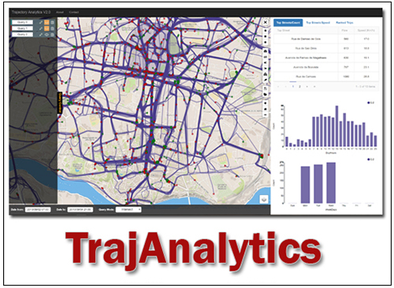 | TrajAnalytics: A Free Software for Visually Exploring Urban Trajectories.[Read More][Project Website]Thanks to advanced technologies in sensing and computing, the mobility patterns and dynamics of urban cities and their citizen are recorded and manifested in a variety of urban trajectory datasets, which include the moving paths of human, taxi, bus, fleets, cars, and so on. Understanding and analyzing such large-scale, complex data is of great importance to enhance both human lives and urban environments. Supported by National Science Foundation, TrajAnalytics aims to provide exploratory data visualization tools for researchers, administrations, practitioners and general public to understand the data and to reveal knowledge intuitively. |
| 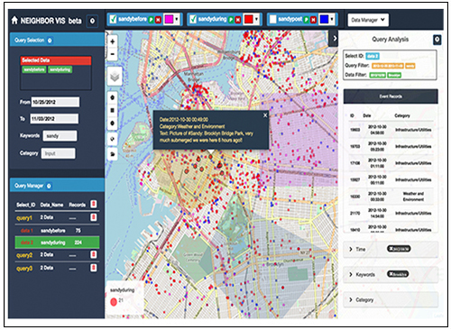 | NeighborVis: A visual analytics system of geospatial-semantic event data in localized neighborhoods within a larger city, town, suburb or rural area.[Read More][Project Website]NeighborVis is a visual analytics system of geospatial-semantic event data in localized neighborhoods within a larger city, town, suburb or rural area. The geospatial-semantic event data (we name it GSE data), consists of geospatial (longitude/latitude or locational address), time, and semantic dimensions, which forms a large part of the important information people deal with for business, personal and administrative use. |
| 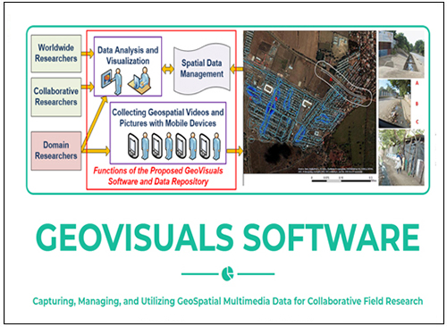 | GeoVisuals: Capturing, Managing, and Utilizing GeoSpatial Multimedia Data for Collaborative Field Research.[Read More][Project Website]The GeoVisuals software system and a Web-based GeoVisuals Data Repository bridge the gap between the diversity of researcher needs and data infrastructure challenges often encountered "in the field". The computing infrastructures help domain researchers and decision-makers capture, manage, query and visualize such big, dynamic data to conduct exploratory and analytical tasks. The utilization of the tools spans across disciplines as diverse as anthropology, clinical health, criminology, disaster management, epidemiology, geography, planning, and sociology. GeoVisuals is developed with collaboration from many domain researchers in academia, various branches of government, and non-profit sectors. It is shared to users as public-licensed software with free access. |
Awards and Honors
- 2019, Kent State University Fellowship, Kent State University
- 2018, Outstanding Doctoral Research Award, Department of Computer Science - Kent State University
- 2017 to 2018, Research Assistantship, Kent State University
- 2014 to 2017, Teaching Assistantship, Kent State University
- 06.2016 to 08.2016, Research Assistantship, Kent State University
- 2016, Graduate Student Senate (GSS) Domestic Travel Award for Fall Semester 2016, Kent State University
- 2008, MSc Degree Awarded with Grade Excellent, University of Duhok
- 2005, BSc with First Rank Award overall the College of Science University of Duhok
Profile
- 08.2024 to NOW, Chair, Computer Science and IT Department, The American University of Kurdistan
- 09.2020 to 09.2024, Head of the Department, Computer Science Department, University of Duhok
- 09.2017 to 05.2019, GeoVisuals Project, Software Developer, CS Department, Kent State University
- 07.2017 to 05.2019, NeighborVis Project, Software Developer, CS Department, Kent State University
- 05.2017 to 12.2018, Research Assistant, CS Department, Kent State University
- 08.2015 to 05.2019, TrajAnalytics Project, Project Lead, CS Department, Kent State University
- 09.2014 to 2017.05, Teaching Assistant, CS Department, Kent State University
- 2010 to 2013, Coordinator, Computer Science Department, University of Duhok
- 2008 to 2013, Assistant lecturer, Computer Science Department, University of Duhok
- MSc (Computer Science)@University of Duhok (Kurdistan Region of Iraq, 2008)
- 2005 to 2008, Research Assistant, Computer Science Department, University of Duhok
- BSc (Computer Science)@University of Duhok (Kurdistan Region of Iraq, 2005)
Useful Links
- AUK Unique Master Program: Master of Science in Artificial Intelligence (AI)
- AUK Unique Bachelor Program: Bachelor of Science in Computer Software and Security
- Earth Engine Data Catalog
- Kaggle: Machine Learning and Data Science Community
- W3Schools: popular site offering free web development and programming tutorials and references.
- GeeksforGeeks: Your All-in-One Tech Learning Portal.
- Data-Driven Documents (D3): The JavaScript library for bespoke data visualization.
- Leaflet Interactive Maps
Misc. Thing
- Tutorial on Urban Trajectory Data Visualization @ IEEE VISWEEK 2018, Berlin, Germany, 2018.
- Workshop on Urban Data Visualization @ IEEE INTELLIGENT TRANSPORTATION SYSTEMS CONFERENCE - ITSC, October, 2019, Auckland, New Zealand.
Contact
- Dr. Shamal AL-Dohuki Department of Computer Science and IT College of Arts and Sciences The American University of Kurdistan shamal.taha(at)auk.edu.krd | shamal.aldohuki(at)uod.ac